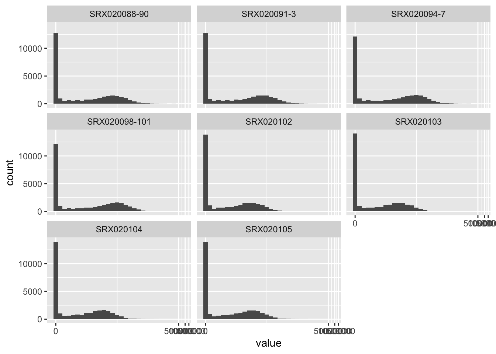
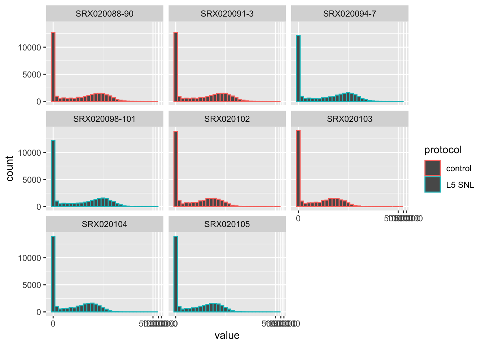

3.6 Example: Converting from complex to ‘tidy’ data formats
We will provide a detailed example of a case where data pre-processing in R results in a complex, ‘untidy’ data format. We will walk through an example of applying automated gating to flow cytometry data. We will demonstrate the complex initial format of this pre-processed data and then show trainees how a ‘tidy’ dataset can be extracted and used for further data analysis and visualization using the popular R ‘tidyverse’ tools. This example will use real experimental data from one of our Co-Is research on the immunology of tuberculosis.
Objectives. After this module, the trainee will be able to:
- Describe how tools like were used in this real research example to convert from the complex data format from pre-processing to a format better for further data analysis and visualization
- Understand how these tools would fit in their own research pipelines
## ── Attaching packages ─────────────────────────────────────── tidyverse 1.3.0 ──## ✓ ggplot2 3.3.3 ✓ purrr 0.3.4
## ✓ tibble 3.0.6 ✓ dplyr 1.0.4
## ✓ tidyr 1.1.2 ✓ stringr 1.4.0
## ✓ readr 1.4.0 ✓ forcats 0.5.1## ── Conflicts ────────────────────────────────────────── tidyverse_conflicts() ──
## x dplyr::combine() masks Biobase::combine(), BiocGenerics::combine()
## x tidyr::extract() masks magrittr::extract()
## x dplyr::filter() masks stats::filter()
## x dplyr::lag() masks stats::lag()
## x ggplot2::Position() masks BiocGenerics::Position(), base::Position()
## x purrr::set_names() masks magrittr::set_names()3.6.1 Subsection 1
In the previous modules, we have talked about two topics. First we have talked about the convenience and power of tidyverse tools. These tools can be used at points in your workflow when the data can be stored in a simple standard format: the Tidy dataframe format. We have also talked about reasons why there are advantages to using more complex data storage formats earlier in the process. In discussing this, we explained why this leads to early steps of the data preprocessing often being conducted outside of the tidyverse approach, instead using tools available through the bioconductor collection of packages. Once your workflow has advanced to a stage where it is straightforward to store the data in a simpler form at like a dataframe there are a large advantages to shifting into the tidyverse approach as compared to using more complex object-oriented classes for storing the DOT. In this module we will talk through approaches to make the shift from having data stored in bioconductor classes, including very specific classes for some data, into a tidy data format. This will allow an easy transition into using the tiny verse approach for data analysis and visualization at later stages in your workflow.
There are two key tools that have been developed as our packages that facilitate the shift of data from being stored in a more customized object-oriented class, for example one of the S4 type classes that we discussed when talking about complex data formats for bioconductor. These packages move data from one of those storage containers into a tidy dataframe format. By doing this it moves the data into a format that is very easy to use in conjunction with the Tidy barstools and the tidyverse approach.
In this module we will focus specifically on the biobroom package. Of the two packages this focuses specifically on moving data out of many of the common bioconductor classes and into tidy dataframes. this package drawers and an object-oriented approach in that it provides generic functions for extracting data from many different object classes that are coming in by a conductor. You will call the same function regardless of the class that the dad is in. If that object class has a bio broom method for that generic function, then the function will be able to extract parts of the data into a tidy data frame.
In this module we will also discuss another tool from the tidyverse, or rather a
tool that draws on the tiny verse approach, that can be easily used in
conjunction with biomedical data that has been processed using bioconductor
tools. This is a package called ggbio that facilitates the visualization of
biomedical data. It includes functions and Specialized gian’s or geometrical
objects that are customized for some of the tasks that you might want to conduct
in visualizing biomedical data in r. by drawing on tools and an approach from
ggplot which is part of the tidyverse approach, these tools allow you to work
with this data while still leveraging the powerful visualization tools and
philosophy underlying the ggplot package.
Finally it is quite likely better purchase will continue to evolve through are, and that in the future there might be tidy data frame format that are adaptable enough to handle earlier stages in the data preprocessing. Tidy first dataframe have already been adapted to enable them to include more complex types of data within certain columns of the data frame any special list type column. This functionality is being leveraged through the ffs package to an evil a tidy approach to working with geographical data. This allows those who are working with geographical data, for example data from shapefiles for creating Maps, to use the standard tidyverse approaches while still containing complex data needed for this geographical information. It seems very possible that similar approaches may be adapted in the near future to allow for biomedical or genomic data to be stored in a way that both accounts for complexity early and pre-processing of these data but also allows for a more natural integration with the wealth of powerful tools available through the tidyverse approach.
3.6.2 The biobroom package
The biobroom package includes three main generic functions (methods), which
can be used on a number of Bioconductor object classes. When applied to object
stored in one of these Bioconductor classes, these functions will extract part
of the data into a tidy dataframe format. In this format, it is easy to use the
tools from the tidyverse to further explore, analyze, and visualize the data.
The three generic functions of biobroom are the functions tidy, augment,
and glance. These function names mimic the names of the three main functions
in the broom package, which is a more general purpose package for extracting
tidy datasets from more complex R object containers. The broom package
focuses on the output from functions in R for statistical testing and modeling,
while the newer biobroom package replicates this idea, but for many of the
common object classes used to store data through Bioconductor packages and
workflows.
The biobroom package includes methods for the following object classes
(Bass et al. 2020):
qvalueobjects, which are used …DESeqDataSetobjects, which are used …DGEExactobjects, which are used …- [limma objects]
- [ExpressoinSet objects]
MSnSetobjects, which are used …
As an example, we can look at how the biobroom package can be used to
convert output generated by functions in the edgeR package into a tidy
dataframe, and how that output can then be explored and visualized using
functions from the tidyverse.
The edgeR package is a popular Bioconductor package that can be used on gene
expression data to explore which genes are expressed differently across
experimental groups (differential expression analysis) (M. D. Robinson, McCarthy, and Smyth 2010). Before using
the functions in the package, the data must be preprocessed to align sequence
reads from the raw data and then to create a table with the counts of each read
at each gene across each sample. The edgeR package includes functions for
pre-processing through its own functions, as well, including capabilities for
filtering out genes with low read counts across all samples and model-based
normalization across samples to help handle technical bias, including
differences in sequencing depth (Chen et al. 2014).
The edgeR package operates on data stored in a special object class
defined by the package, the DGEList object class (Chen et al. 2014).
This object class includes areas for storing the table of read counts,
in the form of a matrix appropriate for analysis by other functions in
the package, as well as other spots for storing information about each
sample and, if needed, a space to store annotations of the genes
(Chen et al. 2014).
[Example from the biobroom help documentation—uses the hammer data
that comes with the package. These data are stored in an ExpressionSet
object, an object class defined by the Biobase package. You can see how the tidy function extracts these data in a
tidy format. Then, the data are put in a DGEList class so they are in
the right container for operations from edgeR. Then functions from the
edgeR package are run to perform differential expression analysis on the
data. The result is an object in the DGEExact class, which is defined
by the edgeR package. To extract data from this class in a tidy format,
you can use the tidy and glance functions from biobroom.]
library(biobroom)
library(Biobase)
library(edgeR)
data(hammer)
class(hammer)## [1] "ExpressionSet"
## attr(,"package")
## [1] "Biobase"tidy(hammer)## # A tibble: 236,128 x 3
## gene sample value
## <chr> <chr> <int>
## 1 ENSRNOG00000000001 SRX020102 2
## 2 ENSRNOG00000000007 SRX020102 4
## 3 ENSRNOG00000000008 SRX020102 0
## 4 ENSRNOG00000000009 SRX020102 0
## 5 ENSRNOG00000000010 SRX020102 19
## 6 ENSRNOG00000000012 SRX020102 7
## 7 ENSRNOG00000000014 SRX020102 0
## 8 ENSRNOG00000000017 SRX020102 4
## 9 ENSRNOG00000000021 SRX020102 7
## 10 ENSRNOG00000000024 SRX020102 86
## # … with 236,118 more rows## Example from `biobroom` help documentation
hammer.counts <- exprs(hammer)[, 1:4]
hammer.treatment <- phenoData(hammer)$protocol[1:4]
y <- DGEList(counts=hammer.counts,group=hammer.treatment)
y <- calcNormFactors(y)
y <- estimateCommonDisp(y)
y <- estimateTagwiseDisp(y)
et <- exactTest(y)
class(et)## [1] "DGEExact"
## attr(,"package")
## [1] "edgeR"tidy(et)## # A tibble: 29,516 x 4
## gene estimate logCPM p.value
## <chr> <dbl> <dbl> <dbl>
## 1 ENSRNOG00000000001 2.65 1.49 0.00000131
## 2 ENSRNOG00000000007 -0.409 -0.226 1
## 3 ENSRNOG00000000008 2.22 -0.407 0.129
## 4 ENSRNOG00000000009 0 -1.31 1
## 5 ENSRNOG00000000010 0.0331 1.79 1
## 6 ENSRNOG00000000012 -3.39 0.0794 0.00375
## 7 ENSRNOG00000000014 3.65 -0.854 0.252
## 8 ENSRNOG00000000017 2.42 1.11 0.0000638
## 9 ENSRNOG00000000021 -2.02 0.211 0.0373
## 10 ENSRNOG00000000024 0.133 3.97 0.508
## # … with 29,506 more rowsglance(et)## significant comparison
## 1 6341 control/L5 SNLThe creator of the broom package listed some of the common ways that
statistical model output objects—the focus on ‘tidying’ in broom—tend to
be untidy. These include that important information is stored in the row names,
where it is harder to access, that the names of some columns can be tricky to
work with because they use non-standard conventions (i.e., they don’t follow the
rules for naming objects in R), that some desired information is not available
in the object, but rather is typically computed with later methods for the
object, like when summary is run on the object, or are only available as the
result of a print method run on the object, and vectors that a user may want
to explore in tandem are stored in different places in the object.
(D. Robinson 2014)
[Examples of these in Bioconductor objects?]
These ‘messy’ characteristics show up in the data stored in Bioconductor
objects, as well, in terms of characteristics that impede working with
data stored in these formats easily using tools from the tidyverse.
As an example, one common class for storing data in Bioconductor work is
the ExpressionSet object class, defined in the Biobase package (W. Huber et al. 2015).
This object class can be used to store the data from high-throughput
assays. It includes slots for the assay data, as well as slots
for storing metadata about the experiment, which could include information
like sampling time points or sample strains, as well as the experimental
group of each sample (control versus treated, for example).
Data from the assay for the experiment—for example, gene expression
or intensity [?] measurements for each gene and each sample [?]—can be
extracted from an ExpressionSet object using an extractor function
called exprs. Here is an example using the hammer example dataset
available with the biobroom package. The code call here extracts the
assay data from the hammer R object, which is an instance of the
ExpressionSet object class. It uses indexing ([1:10, 1:3]) to limit
printing to the first ten rows and first three columns of the output, so
we can investigate a small snapshot of the data:
## SRX020102 SRX020103 SRX020104
## ENSRNOG00000000001 2 4 18
## ENSRNOG00000000007 4 1 3
## ENSRNOG00000000008 0 1 4
## ENSRNOG00000000009 0 0 0
## ENSRNOG00000000010 19 10 19
## ENSRNOG00000000012 7 5 1
## ENSRNOG00000000014 0 0 2
## ENSRNOG00000000017 4 1 12
## ENSRNOG00000000021 7 5 2
## ENSRNOG00000000024 86 53 86These data are stored in a matrix format. The gene identifiers [?] are given in the rownames and the samples in the column names. Each cell of the matrix provides the expression level (number of reads [?]) of a specific gene in a specific sample.
These data are structured and stored in such a way that they have some of the
characteristics that can make data difficult to work with the data using
tidyverse tools. For example, they store gene identifiers in the rownames,
rather than in a separate column where they can be easily accessed when using
tidyverse functions. Also, there are phenotype / meta data that are stored
in other parts of the ExpressionSet data but that may be interesting to
explore in conjunction with these assay data, including the experimental
group of each sample (control versus animals in which chronic neuropathic
pain was induced, in these example data).
The tidy function from the biobroom package extracts these data and
restructures them into a ‘tidy’ format, ready to use easily with tidyverse
tools.
## # A tibble: 236,128 x 3
## gene sample value
## <chr> <chr> <int>
## 1 ENSRNOG00000000001 SRX020102 2
## 2 ENSRNOG00000000007 SRX020102 4
## 3 ENSRNOG00000000008 SRX020102 0
## 4 ENSRNOG00000000009 SRX020102 0
## 5 ENSRNOG00000000010 SRX020102 19
## 6 ENSRNOG00000000012 SRX020102 7
## 7 ENSRNOG00000000014 SRX020102 0
## 8 ENSRNOG00000000017 SRX020102 4
## 9 ENSRNOG00000000021 SRX020102 7
## 10 ENSRNOG00000000024 SRX020102 86
## # … with 236,118 more rowsThis output is a tidy dataframe object, with three columns providing the gene name, the sample identifier, and the expression level. In this format, the data can easily be explored and visualized with tidyverse tools. For example, you could easily create a set of histograms, one per sample, showing the distribution of expression levels across all genes in each sample: [better example visualization here?]
## `stat_bin()` using `bins = 30`. Pick better value with `binwidth`.
You can also incorporate data that are stored in the phenoData slot of
the ExpressionSet object by specifying addPheno = TRUE:
## # A tibble: 236,128 x 8
## gene sample sample.id num.tech.reps protocol strain Time value
## <chr> <chr> <fct> <dbl> <fct> <fct> <fct> <int>
## 1 ENSRNOG0000… SRX0201… SRX020102 1 control Sprague … 2 mon… 2
## 2 ENSRNOG0000… SRX0201… SRX020102 1 control Sprague … 2 mon… 4
## 3 ENSRNOG0000… SRX0201… SRX020102 1 control Sprague … 2 mon… 0
## 4 ENSRNOG0000… SRX0201… SRX020102 1 control Sprague … 2 mon… 0
## 5 ENSRNOG0000… SRX0201… SRX020102 1 control Sprague … 2 mon… 19
## 6 ENSRNOG0000… SRX0201… SRX020102 1 control Sprague … 2 mon… 7
## 7 ENSRNOG0000… SRX0201… SRX020102 1 control Sprague … 2 mon… 0
## 8 ENSRNOG0000… SRX0201… SRX020102 1 control Sprague … 2 mon… 4
## 9 ENSRNOG0000… SRX0201… SRX020102 1 control Sprague … 2 mon… 7
## 10 ENSRNOG0000… SRX0201… SRX020102 1 control Sprague … 2 mon… 86
## # … with 236,118 more rowsWith this addition, visualizations can easily be changed to also show the experimental group of each sample:
## `stat_bin()` using `bins = 30`. Pick better value with `binwidth`. You can also do things like look at differences in values for specific genes, pairing tools for exploring data with tools for visualization, both from the tidyverse:

The data for a subset of the sample can be analyzed using functions from the
edgeR package, to complete needed pre-processing (for example, calculating
normalizing factors with calcNormFactors, to reduce impacts from technical
bias [?]), estimate dispersion using conditional maximum likelihood and
empirical Bayesian methods (estimateCommonDisp and estimateTagwiseDisp), and
then perform a statistical analysis, conducting a differential expression
analysis (exactTest) (Chen et al. 2014).
The data are stored in a special Bioconductor class, as an instance of
DGEList, throughout most of this process. This special class can be initialized
with data from the original ExpressionSet object, specifically, assay
data with the counts per gene in each sample and data on the experimental
phenotypes for the experiment—specifically, the protocol for each sample,
in terms of whether it was a control or if the sample was from an animal
in which chronic neuropathic pain was induced (Hammer et al. 2010).
## [1] "DGEList"
## attr(,"package")
## [1] "edgeR"Once the data are stored in this special DGEList class, different
steps of the preprocessing can be conducted. In each case, the results are
stored in special slots of the DGEList object. In this way, the original
data and results from preprocessing are all kept together in a single
object, each in a special slot within the object’s structure.
## [1] "DGEList"
## attr(,"package")
## [1] "edgeR"## [1] "DGEList"
## attr(,"package")
## [1] "edgeR"## [1] "DGEList"
## attr(,"package")
## [1] "edgeR"After the preprocessing, the data can be analyzed using the exactText function.
This inputs the data stored in a DGEList object and outputs results into
a different object class, a DGEExact class.
## [1] "DGEExact"
## attr(,"package")
## [1] "edgeR"The DGEExact class is defined by the edgeR package and was created
specifically to store the results from a differential expression analysis
(Chen et al. 2014). It has slots for a dataframe giving the estimates of
differential change in expression across the experimental groups for each
gene, within a table slot. Again, in this output, gene identifiers are
stored as rownames—which makes them hard to access with tidyverse tools—rather
than in their own column:
## logFC logCPM PValue
## ENSRNOG00000000001 2.64635814 1.49216267 1.309933e-06
## ENSRNOG00000000007 -0.40869816 -0.22616605 1.000000e+00
## ENSRNOG00000000008 2.22296029 -0.40665547 1.288756e-01
## ENSRNOG00000000009 0.00000000 -1.31347471 1.000000e+00
## ENSRNOG00000000010 0.03307909 1.79448965 1.000000e+00
## ENSRNOG00000000012 -3.39210151 0.07939132 3.745676e-03The DGEExact object also has a slot that contains a vector with identifiers
for the two experimental groups that are being compared in the
differential expression analysis, under the slot comparison:
## [1] "control" "L5 SNL"There is also a space in this object class where information about each gene can be stored, if desired.
Two biobroom methods are defined for the DGEExact object class, glance
and tidy. The tidy method extracts the results from the differential
experssion analysis, but moves these results into a dataframe where the
gene names are given their own column, rather than being stored in the
hard-to-access rownames:
## # A tibble: 29,516 x 4
## gene estimate logCPM p.value
## <chr> <dbl> <dbl> <dbl>
## 1 ENSRNOG00000000001 2.65 1.49 0.00000131
## 2 ENSRNOG00000000007 -0.409 -0.226 1
## 3 ENSRNOG00000000008 2.22 -0.407 0.129
## 4 ENSRNOG00000000009 0 -1.31 1
## 5 ENSRNOG00000000010 0.0331 1.79 1
## 6 ENSRNOG00000000012 -3.39 0.0794 0.00375
## 7 ENSRNOG00000000014 3.65 -0.854 0.252
## 8 ENSRNOG00000000017 2.42 1.11 0.0000638
## 9 ENSRNOG00000000021 -2.02 0.211 0.0373
## 10 ENSRNOG00000000024 0.133 3.97 0.508
## # … with 29,506 more rowsNow that the data are in this tidy format, tools from the tidyverse can
be easily applied. For example, you could use functions from the dplyr
package to see the genes for which the differential expression analysis
resulted in both a very low p-value and a large difference in expression
across the experimental groups:
## # A tibble: 803 x 4
## gene estimate logCPM p.value
## <chr> <dbl> <dbl> <dbl>
## 1 ENSRNOG00000013496 6.39 3.41 5.95e- 46
## 2 ENSRNOG00000001338 6.01 2.25 1.37e- 22
## 3 ENSRNOG00000020136 5.17 3.89 3.19e- 52
## 4 ENSRNOG00000018808 4.78 6.46 1.75e-169
## 5 ENSRNOG00000006151 4.43 2.99 2.39e- 30
## 6 ENSRNOG00000009768 4.40 7.83 5.57e-293
## 7 ENSRNOG00000030927 -4.29 2.45 6.32e- 23
## 8 ENSRNOG00000001476 4.25 3.76 1.45e- 47
## 9 ENSRNOG00000004805 4.05 6.64 2.51e-185
## 10 ENSRNOG00000014327 3.85 4.51 5.39e- 63
## # … with 793 more rowsOther exploratory analysis will also be straightforward with the data using tidyverse tools, now that they are in a “tidy” format.
The glance method can also be applied to data that are stored in a
DGEExact class. In this case, the method will extract the names of the
experimental groups being compared (from the comparison slot of the
object) as well as count the number of genes with statistically
significant differences in expression level, based on the values in the
table slot of the object.
## significant comparison
## 1 6341 control/L5 SNL## significant comparison
## 1 4225 control/L5 SNLAs another example, you can now use tools from ggplot2, as well as
extensions built on this package, to do things like create a volcano
plot of the data with highlighting of noteworthy genes on the plot:

If you wanted to access the help files for these biobroom methods for this
object class, you could do so by calling help in R (?) using the name of the
method, a dot, and then the name of the object class, e.g., ?tidy.DGEExact.
3.6.3 The ggbio package
3.6.4 Subsection 2
“The biobroom package contains methods for converting standard objects in Bioconductor into a ‘tidy format.’ It serves as a complement to the popular broom package, and follows the same division (tidy/augment/glance) of tidying methods.” (Bass et al. 2020)
“Tidying data makes it easy to recombine, reshape and visualize bioinformatics analyses. Objects that can be tidied include: ExpressionSet object, GRanges and GRangesList objects, RangedSummarizedExperiment object, MSnSet object, per-gene differential expression tests from limma, edgeR, and DESeq2, qvalue object for multiple hypothesis testing.” (Bass et al. 2020)
“We are currently working on adding more methods to existing Bioconductor objects.” (Bass et al. 2020)
“All biobroom tidy and augment methods return a tbl_df by default (this prevents them from printing many rows at once, while still acting like a traditional data.frame).” (Bass et al. 2020)
“The concept of ‘tidy data’ offers a powerful framework for structuring data to ease manipulation, modeling and visualization. However, most R functions, both those builtin and those found in third-party packages, produce output that is not tidy, and that is therefore difficult to reshape, recombine, and otherwise manipulate. Here I introduce the broom package, which turns the output of model objects into tidy data frames that are suited to further analysis, manipulation, and visualization with input-tidy tools.” (D. Robinson 2014)
“Tools are classified as ‘messy-output’ if their output does not fit into this [tidy] framework. Unfortunately, the majority of R modeling tools, both from the built-in stats package and those in common third party packages, are messy-output. This means the data analyst must tidy not only the original data, but the results at each intermediate stage of an analysis.” (D. Robinson 2014)
“The broom package is an attempt to solve this issue, by bridging the gap from untidy outputs of predictions and estimations to create tidy data that is easy to manipulate with standard tools. It centers around three S3 methods, tidy, augment, and glance, that each take an object produced by R statistical functions (such as lm, t.test, and nls) or by popular third-party packages (such as glmnet, survival, lme4, and multcomp) and convert it into a tidy data frame without rownames (Friedman et al., 2010; Therneau, 2014; Bates et al., 2014; Hothorn et al., 2008). These outputs can then be used with input-tidy tools such as dplyr or ggplot2, or downstream statistical tests. broom should be distinguished from packages such as reshape2 and tidyr, which rearrange and reshape data frames into different forms (Wickham, 2007b, 2014b). Those packages perform essential tasks in tidy data analysis but focus on manipulating data frames in one specific format into another. In contrast, broom is designed to take data that is not in a data frame (sometimes not anywhere close) and convert it to a tidy data frame.” (D. Robinson 2014)
“
tidyconstructs a data frame that summarizes the model’s statistical components, which we refer to as the component level. In a regression such as the above it may refer to coefficient estimates, p-values, and standard errors for each term in a regression. The tidy generic is flexible- in other models it could represent per-cluster information in clustering applications, or per-test information for multiple comparison functions. …augmentadd columns to the original data that was modeled, thus working at the observation level. This includes predictions, residuals and prediction standard errors in a regression, and can represent cluster assignments or classifications in other applications. By convention, each new column starts with . to ensure it does not conflict with existing columns. To ensure that the output is tidy and can be recombined, rownames in the original data, if present, are added as a column called .rownames. … Finally,glanceconstructs a concise one-row summary of the model level values. In a regression this typically contains values such as R2 , adjusted R2 , residual standard error, Akaike Information Criterion (AIC), or deviance. In other applications it can include calculations such as cross validation accuracy or prediction error that are computed once for the entire model. … These three methods appear across many analyses; indeed, the fact that these three levels must be combined into a single S3 object is a common reason that model outputs are not tidy. Importantly, some model objects may have only one or two of these methods defined. (For example, there is no sense in which a Student’s T test or correlation test generates information about each observation, and therefore no augment method exists).” (D. Robinson 2014)
“While model inputs usually require tidy inputs, such attention to detail doesn’t carry over to model outputs. Outputs such as predictions and estimated coefficients aren’t always tidy. For example, in R, the default representation of model coefficients is not tidy because it does not have an explicit variable that records the variable name for each estimate, they are instead recorded as row names. In R, row names must be unique, so combining coefficients from many models (e.g., from bootstrap resamples, or subgroups) requires workarounds to avoid losing important information. This knocks you out of the flow of analysis and makes it harder to combine the results from multiple models.” (Wickham 2014)
“edgeR can be applied to differential expression at the gene, exon, transcript or tag level. In fact, read counts can be summarized by any genomic feature. edgeR analyses at the exon level are easily extended to detect differential splicing or isoform-specific differential expression.” (Chen et al. 2014)
“edgeR provides statistical routines for assessing differential expression in RNA-Seq experiments or differential marking in ChIP-Seq experiments. The package implements exact statistical methods for multigroup experiments developed by Robinson and Smyth [33, 34]. It also implements statistical methods based on generalized linear models (glms), suitable for multifactor experiments of any complexity, developed by McCarthy et al. [22], Lund et al. [20], Chen et al. [5] and Lun et al. [19]. … A particular feature of edgeR functionality, both classic and glm, are empirical Bayes methods that permit the estimation of gene-specific biological variation, even for experiments with minimal levels of biological replication.” (Chen et al. 2014)
“edgeR performs differential abundance analysis for pre-defined genomic features. Although not strictly necessary, it usually desirable that these genomic features are non-overlapping. For simplicity, we will hence-forth refer to the genomic features as ‘genes,’ although they could in principle be transcripts, exons, general genomic intervals or some other type of feature. For ChIP-seq experiments, abundance might relate to transcription factor binding or to histone mark occupancy, but we will henceforth refer to abundance as in terms of gene expression.” (Chen et al. 2014)
“edgeR stores data in a simple list-based data object called a DGEList. This type of object is easy to use because it can be manipulated like any list in R. … The main components of an DGEList object are a matrix counts containing the integer counts, a data.frame samples containing information about the samples or libraries, and a optional data.frame genes containing annotation for the genes or genomic features. The data.frame samples contains a column lib.size for the library size or sequencing depth for each sample. If not specified by the user, the library sizes will be computed from the column sums of the counts. For classic edgeR the data.frame samples must also contain a column group, identifying the group membership of each sample.” (Chen et al. 2014)
“Genes with very low counts across all libraries provide little evidence for differential expression. In the biological point of view, a gene must be expressed at some minimal level before it is likely to be translated into a protein or to be biologically important. In addition, the pronounced discreteness of these counts interferes with some of the statistical approximations that are used later in the pipeline. These genes should be filtered out prior to further analysis. As a rule of thumb, genes are dropped if they can’t possibly be expressed in all the samples for any of the conditions. Users can set their own definition of genes being expressed. Usually a gene is required to have a count of 5-10 in a library to be considered expressed in that library. Users should also filter with count-per-million (CPM) rather than filtering on the counts directly, as the latter does not account for differences in library sizes between samples.” (Chen et al. 2014)
“The most obvious technical factor that affects the read counts [in data for edgeR and so requires normalizations], other than gene expression levels, is the sequencing depth of each RNA sample. edgeR adjusts any differential expression analysis for varying sequencing depths as represented by differing library sizes. This is part of the basic modeling procedure and flows automatically into fold-change or p-value calculations. It is always present, and doesn’t require any user intervention.” (Chen et al. 2014)
“In edgeR, normalization takes the form of correction factors that enter into the statistical model. Such correction factors are usually computed internally by edgeR functions, but it is also possible for a user to supply them. The correction factors may take the form of scaling factors for the library sizes, such as computed by calcNormFactors, which are then used to compute the effective library sizes. Alternatively, gene-specific correction factors can be entered into the glm functions of edgeR as offsets. In the latter case, the offset matrix will be assumed to account for all normalization issues, including sequencing depth and RNA composition. Note that normalization in edgeR is model-based, and the original read counts are not themselves transformed. This means that users should not transform the read counts in any way before inputing them to edgeR.” (Chen et al. 2014)